GAMEMODES
From tactical competitive play to fast-paced warmup modes.
INFORMATION ON GAME MODES
Game Modes are different types of modes that can be played in VALORANT. These modes offer players different ways to experience the game, depending on their goals and playstyle. Some game modes are more competitive and focus on teamwork, strategy, and ranking, while others are designed to be more casual and fun. There are also game modes meant for warming up and practicing mechanics, such as aim and movement. Most modes can be categorized as either Plant/Defuse-style or Deathmatch-style.
PLANT/DEFUSE GAME MODES
 UNRATED
UNRATED
Unrated is the standard VALORANT game mode that uses the same rules and format as Competitive but without affecting a player’s rank. It is ideal for learning the game, practicing new agents or strategies, and playing casually with friends. Matches still use the full economy system, map pool, and round structure.
 COMPETITIVE
COMPETITIVE
Competitive is a higher-stakes version of Unrated where players face others of similar skill to earn and progress through ranks. The rank system consists of multiple tiers, starting from Iron, Bronze, Silver, Gold, Platinum, Diamond, Ascendant, Immortal, and Radiant, with most ranks divided into three sub-tiers. Players gain or lose Rank Rating (RR) based on match results, individual performance, and consistency, which determines whether they rank up or down.
 SWIFTPLAY
SWIFTPLAY
Swiftplay is a faster, more casual version of the standard VALORANT match, designed for shorter and more fun games while keeping core mechanics the same. Teams play first to 5 rounds, with increased starting credits, faster ultimate charging, and quicker economy progression, making it ideal for warming up or playing quick matches.
 SPIKE RUSH
SPIKE RUSH
Spike Rush is a fast, fun, and casual game mode focused on fun and experimentation rather than strategy and economy management. All players use the same random weapon each round, abilities are free, and special power-up orbs appear around the map to add variety and chaos.
PREMIER
Premier is a tournament-based game mode that follows the same core rules as Competitive, but is designed for organized, high-level team play. Players compete as a fixed squad throughout a tournament structure, with features inspired by professional play such as map pick and ban phases, emphasizing coordination and strategy.
 REPLICATION DISCONTINUED
REPLICATION DISCONTINUED
Replication is a discontinued fun and chaotic game mode where each team is assigned a single random agent, and all players on that team must use the same agent for the entire match.
DEATHMATCH-STYLE GAME MODES
 DEATHMATCH
DEATHMATCH
Deathmatch is a free-for-all mode focused on aim training and mechanical practice. Players spawn individually with no abilities and instantly respawn after being eliminated, making it ideal for warming up before matches.
 ESCALATION UNAVAILABLE
ESCALATION UNAVAILABLE
Escalation is a fast-paced, team-based mode inspired by gun game, where teams progress through a series of weapons by getting kills. Each new level introduces different weapons or abilities, keeping gameplay varied and fun. This game mode is Nikko’s personal favorite!
 TEAM DEATHMATCH
Team Deathmatch is a casual, team-based combat mode focused on fighting and practice rather than objectives. Players choose loadouts, use abilities, and respawn quickly, making it great for warming up or playing stress-free. This game mode is Aamir’s personal favorite!
 SNOWBALL FIGHT LIMITED TIME
SNOWBALL FIGHT LIMITED TIME
Snowball Fight is a limited-time, festive game mode where players use snowball launchers instead of standard weapons. It is designed purely for fun and chaos during special events.